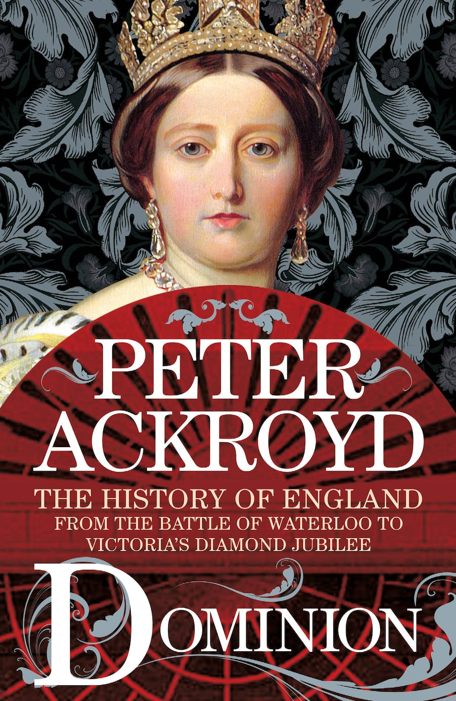

Main hobbies
This website describes my favourite hobbies. Let's discover them together!
Reading
I love reading the books! My favorite book is The Haunt of the Baskervillesüêï‚Äçü¶∫.
Read the book
- My other favorite books:
- "The Five Find-Outers series" by Enid Blyton
- "The Famous Five series" by Enid Blyton
- "The Fu Manchu series" by Sax Rohmer
- "The History of England series" by Peter Ackroyd
- "The Club Dumas" by Arturo Pérez-Reverte
- The Five Find-Outers series:
- The Mystery of the Burnt Cottage
- The Mystery of the Disappearing Cat
- The Mystery of the Secret Room
- The Mystery of the Spiteful Letters
- The Mystery of the Missing Necklace
- The Mystery of the Hidden House
- The Mystery of the Pantomime Cat
- The Mystery of the Invisible Thief
- The Mystery of the Vanished Prince
- The Mystery of the Strange Bundle
- The Mystery of Holly Lane
- The Mystery of Tally-Ho Cottage
- The Mystery of the Missing Man
- The Mystery of the Strange Messages
- The Mystery of Banshee Towers
| Book title | Book cover | The year of publishing |
|---|---|---|
| Foundation | 2013 | |
| Tudors | 2014 | |
| Rebellion |

|
2015 |
| Revolution |

|
2020 |
| Dominion |  | 2021 |
| Innovation | 2023 |
Cooking
I can cook cosy dishes as tasty as possible! I love baking ginger biscuits and grated cherry pieüç™.
Read the ginger biscuits recipe Read the grated cherry pie recipe

- My other favorite dishes:
- Caesar salad
- Carrot cake
- Roasted pork
- Homemade pizza
- Chinese teas
- Grated cherry pie by Martha Steward
- 2 pounds fresh sour (tart) cherries (or drained thawed frozen), pitted (6 cups)
- 1 cup sugar
- ¼ cup cornstarch
- ½ teaspoon pure vanilla extract
- ¼ teaspoon pure almond extract
- 2 tablespoons unsalted butter, cut into small pieces
- Buttery Pate Brisee
- All-purpose flour, for surface
- 1 large egg, lightly beaten with 1 tablespoon heavy cream, for egg wash
- Preheat oven to 375 degrees. Make the filling: Toss together cherries, sugar, cornstarch, vanilla extract, and almond extract in a bowl.
- Make the crust: Roll out 1 disk pate brisee to a 1/8-inch thickness on a lightly floured surface. Fit dough into a 9-inch pie plate. Pour in filling; dot top with butter. Refrigerate while making top crust.
- Roll remaining disk pate brisee to a 1/8-inch thickness on a lightly floured surface. Cut out 4 or 5 holes using a 3/4-inch round cookie cutter. Place on top of pie.
- Trim bottom and top crusts to a 1-inch overhang using kitchen shears, and press together to seal around edges. Fold edges under; crimp as desired. Freeze for 20 minutes.
- Brush crust with egg wash. Bake pie on a parchment-lined baking sheet set on the middle rack, with a foil-lined baking sheet on bottom rack to catch juices, until pie is bubbling in center and crust is golden, about 1 hour 45 minutes. Transfer pie to a wire rack, and let cool before serving.
- For the filling:
- For the crust:
- Directions:
| Tea name | Production place | Fermentation degree | Category | Reference |
|---|---|---|---|---|
| Dianhong Congou Black Tea | Kunming, Yunnan | Deep-fermented | Black tea | Read the article |
| Yichang Congou Black Tea | Yichang, Hubei | Deep-fermented | Black tea | Read the article |
| Fuzhuan Brick Tea | Anhua, Hubei | Post-fermented | Dark tea | Read the article |
| Pu-erh Tea | Pu'er, Yunnan | Post-fermented | Dark tea | Read the article |
| Fenguang Shuixian Tea | Chao'an, Guangdong | Semi-fermented | Oolong tea | Read the article |
| Wuyi Rock Tea | Wuyishang, Fujian | Semi-fermented | Oolong tea | Read the article |
| Dianqing Tea | Kunming, Yunnan | Non-fermented | Green tea | Read the article |
| Lushan Yunwu Tea | Jiujiang, Jiangxi | Non-fermented | Green tea | Read the article |
| Congmei White Tea | Nanping, Fujuan | Mild-fermented | White tea | Read the article |
| White Peony Tea | Nanping, Fujuan | Mild-fermented | White tea | Read the article |
| Weishan Maojian Tea | Ningxiang, Hunan | Light-fermented | Yellow tea | Read the article |
| Yuan'an Luyuan Tea | Yichang, Hubei | Light-fermented | Yellow tea | Read the article |